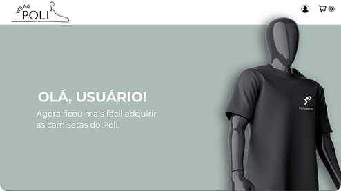
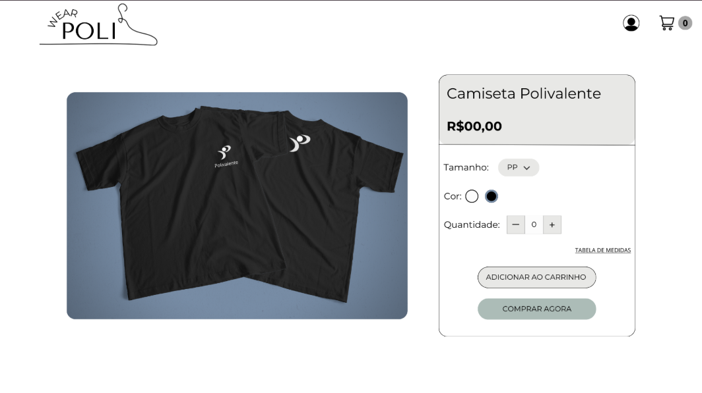
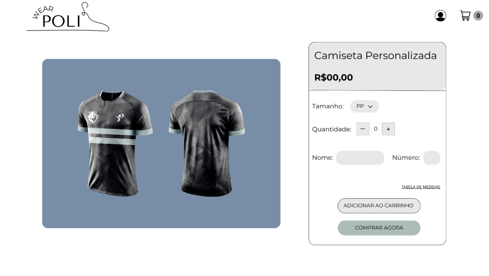

Poli Wear é um site desenvolvido para simplificar a compra de camisetas escolares e de cursos, substituindo o processo manual de pagamento e evitando atrasos. Ele foi projetado para resolver um problema real dentro do ambiente escolar, trazendo praticidade e organização.